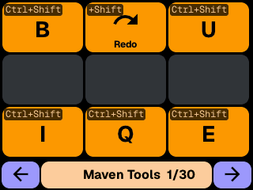

Nachtgespenst
Connected: NG-S3 (pretend), 30 pages
The talk

The commands of the serial shell (manual), answered by this page: help, state, layer 26, tiles, tap 160 120, key 26 2, prefer ble, set effect rainbow, lamps, bar, wave. Values that need a real board (memory, SD card) are made up. Nothing is sent to a computer.
Tap a tile on a key page. The HID report that the device would send appears here: nothing is really sent, so the shutdown tiles are safe to try.
The board

Lamps on the PC
How it works
Tap the arrows at the bottom of the screen to page through the pages. Tap the title in the middle to open the Locks page, and tap it again to go back. On the Locks page, tap Caps, Num or Scroll to switch that lock on or off and watch the LED bars beside the screen. On a phone you can also swipe the screen.
The two bars beside the screen are the ten LEDs of the M5GO base (five on each side), in the colours the firmware sets (the real LEDs are dimmer): lamps 0 to 4 run down the right side, lamps 5 to 9 run up the left side.
What is real
Every picture is a screenshot of a real CoreS3 running the current firmware: one for each key layer, and eight of the Locks page, one for each combination of Caps, Num and Scroll Lock that a host can report. They were taken from the board with its test tool, which presses the lock tiles and reads back the state, so what you see is what the screen draws. The page only replays them: nothing is simulated.
- On the device the Locks page shows what the host reports; here you set the state yourself. The LED bars follow the rule of the firmware: on a key page it shows the colour of that layer, on the Locks page one active lock fills its own two LEDs, several active locks add up over the whole bar, and with none the bar is dark.
- Tapping a tile on a key page does not type anything: the log beside the screen shows the HID report that the device would send for it (the modifier byte and the key of a keyboard report, the 16-bit usage of a media key, or the bit of a system control key), taken from the same headers that the firmware is built from. Power Down and Sleep are shown but are never sent, here or anywhere on this page.
- Compose and Kana are shown, but they cannot be switched: on Linux the desktop never lights those two LEDs.
- The device has 30 pages: 26 key layers, the Locks page and three pages of the lamps (Disk, Lamps: screen and Lamps: bar). Page numbers in the shell start at 0, as on the board, and the screen counts from 1:
layer 0shows “1/30”. The three pages of the lamps have no screenshot: their screen is drawn from the lamps, which the demos fill. - A page can be opened directly with its number, for example
device.html#12.
The demos
The Start the talk button plays the talk of the desktop app, slide by slide, and Demos… opens the popup with every demo of that app. They are the demo window of the desktop app (the Java program that drives the boards over USB) rebuilt for the browser and pointed at this pretend board: they draw on its lamps and on the “lamps on the PC” panel.
- The lamps. The fake board keeps the state of its lamps: the ten lamps of the LED bar and, on the lamp page, a grid. The screen of the board shows the grid with hard pixel edges, as the device draws it; the PC panel scales the same grid up smoothly (the browser interpolates, as the Java app does with a bicubic filter) and shows the bar as two columns of five lamps, 0 to 4 running down the right side and 5 to 9 up the left side.
- The file transfer. A stand-in file is compressed with deflate, cut into blocks with a CRC-32, sent in windows that the pretend board acknowledges with F13 to F20 (or F21 to ask for a resend), and loaded back in game pad reports of 48 bytes. The CRC-32 and the SHA-256 are real; the HID reports are not, and the file is made here instead of the book of the real demo.
- The microphone. The page plays the test tones itself and the oscilloscope, the vu meter and the check read them back, silently by default. You can switch on the speakers, or let it listen to the real microphone of your computer (the browser asks first).
- The photographs. The slideshow dissolves between five photographs, scaled to the lamp grid; the credits are below.
- The shell. The shell under the board has the commands of the standard firmware and the lamp commands (
lamps,bar,wave,mic,telem,disk), answered from this page.
Keys: F5 starts the talk, the arrow keys, Page Up, Page Down and space move through it, P pauses and Esc stops. device.html#demo=bar:comet starts a demo, and device.html#12 opens a page. The sources of the Java app are not public; the browser version is the source of this page.
Photo credits
The photographs come from Wikimedia Commons. They are shown here at a reduced size and, in the demo, as a grid of lamps; each stays under its own licence, and the lamp pictures made from the photographs may be used under the same licence.
- Eiffel Tower and the Pont des Invalides, Paris by Pierre Blaché, CC0 1.0
- Tower Bridge from Shad Thames, London by Colin, CC BY-SA 4.0
- Brandenburg Gate in the evening, Berlin by Thomas Wolf (www.foto-tw.de), CC BY-SA 3.0
- Matterhorn at sunset by Sam Ferrara, CC0 1.0
- Deventer seen from across the IJssel by Smiley.toerist, CC BY-SA 4.0


.jpg){kind=link}